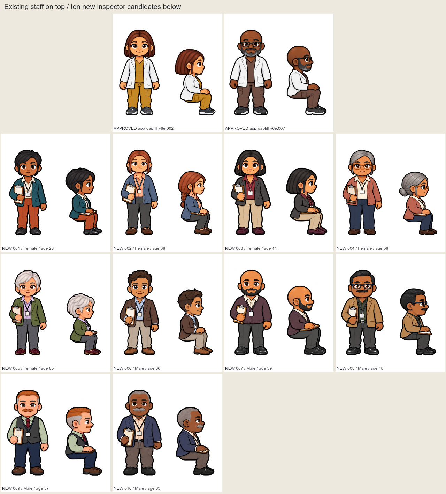
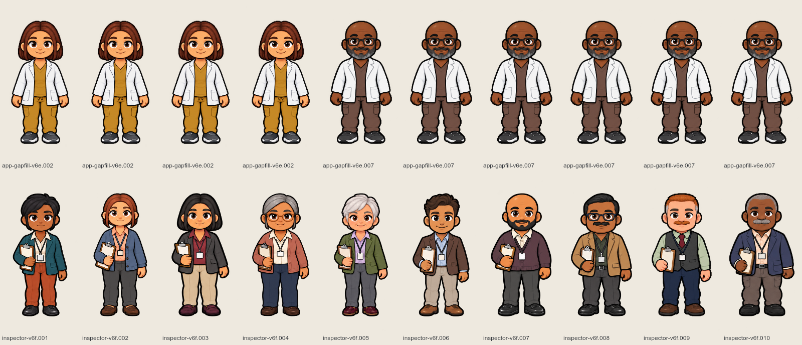
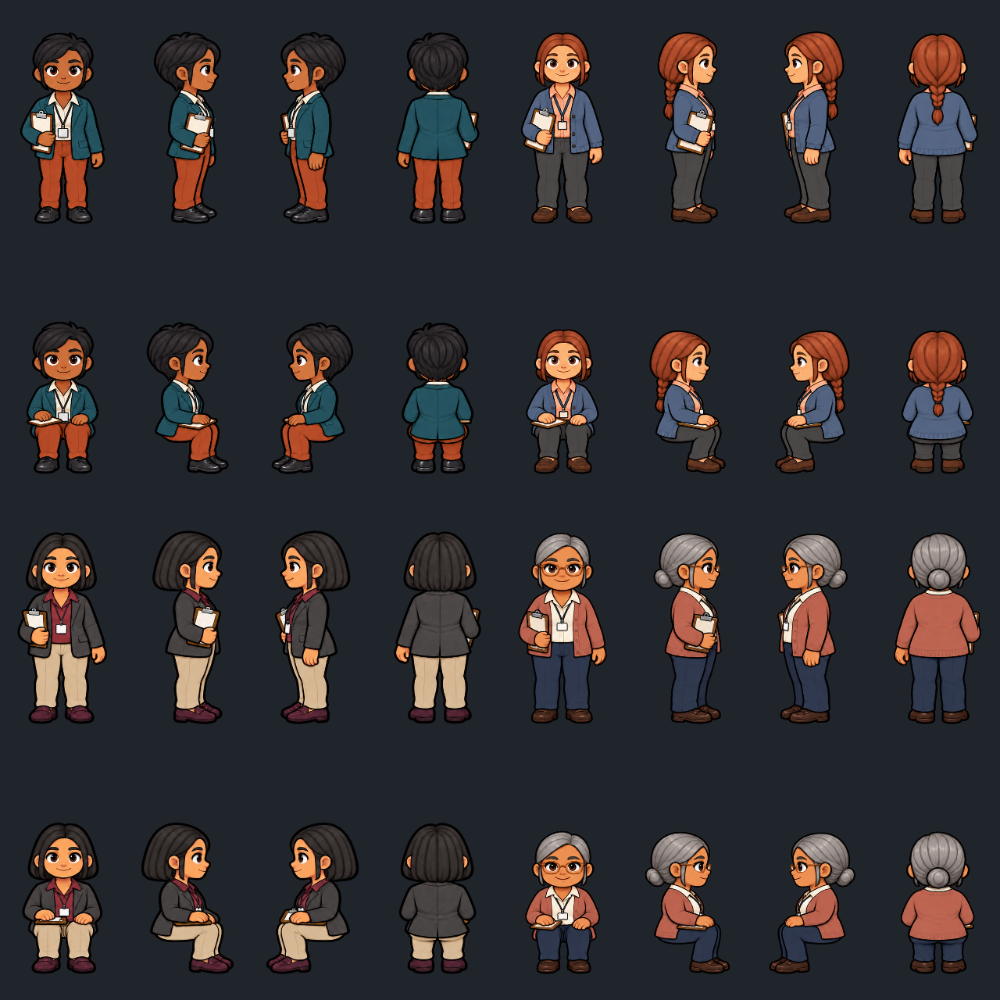
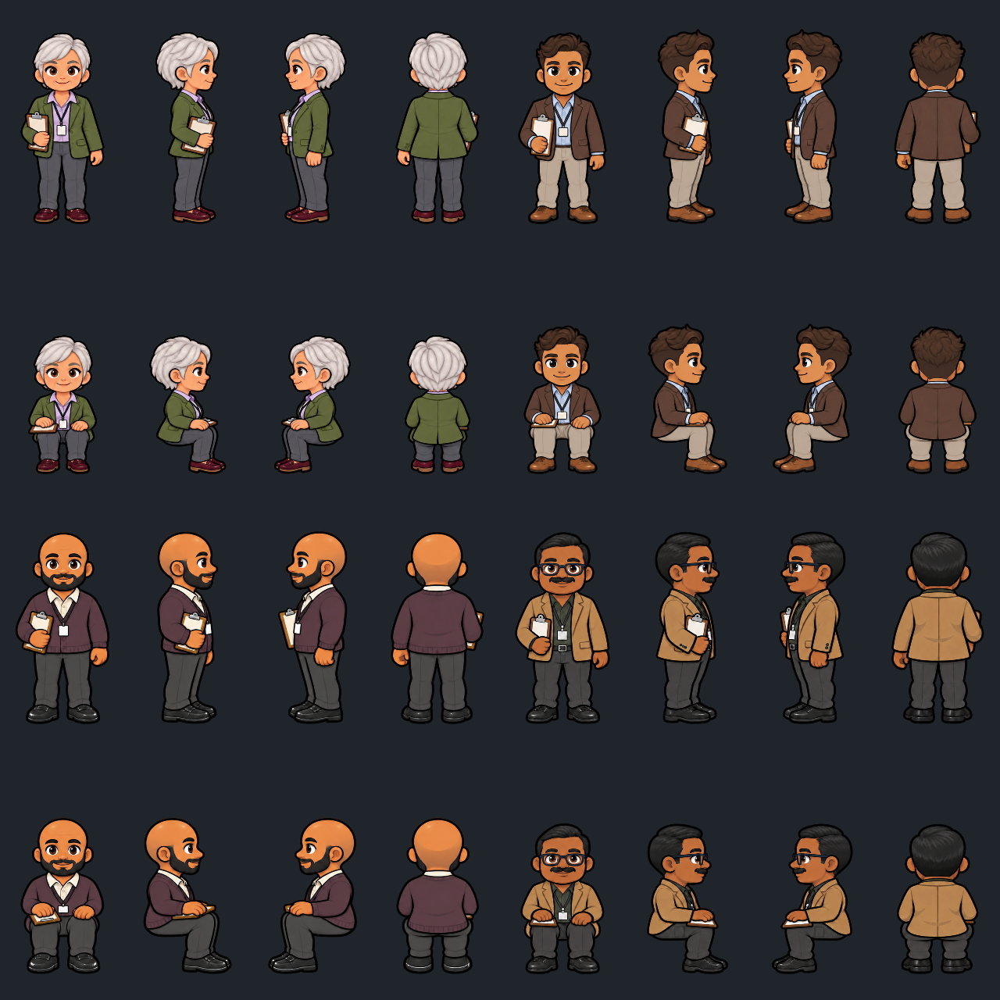
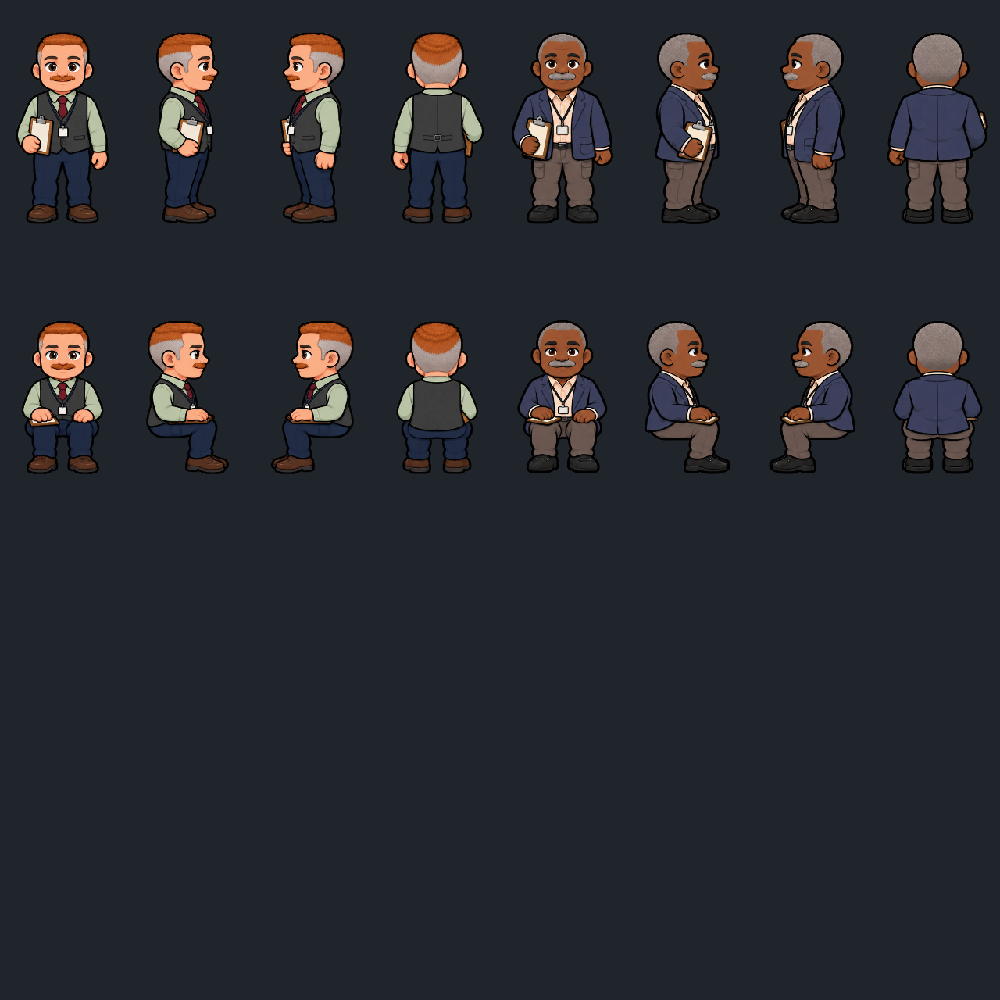

Both existing staff on top; all ten new inspector candidates below. Professional blazers/cardigans/button-downs, lanyards and blank badges. A right-hand clipboard in every pose, resting on the lap when seated. Appearance is visual only. Worker QA; manager acceptance pending.


001, 002, 003, 004

005, 006, 007, 008

009, 010
